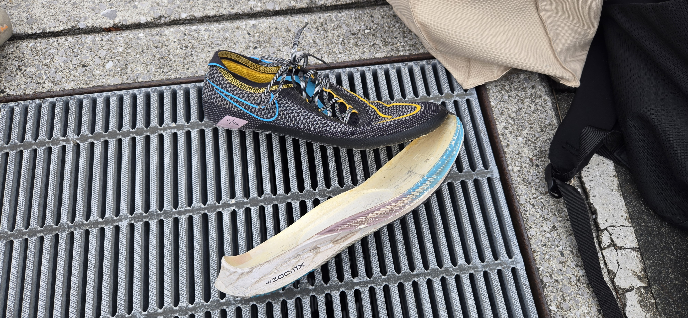

スイムで大きく出遅れ、 バイクで順位を戻したものの、 ランでは脚のトラブルとシューズ破損に苦しんだレースでした。
大会概要
レース結果
| セクション | タイム | 順位 |
|---|---|---|
| 🏊 スイム | 47:14 | 283位 |
| 🚴 バイク | 1:33:55 | 127位 |
| 🏃 ラン | 1:30:27 | 290位 |
レース振り返り
🏊 スイム
スイムは47分14秒、283位。 今回も最初の種目で大きく出遅れる展開になりました。
ODサブ2時間30分を目指すうえでは、 スイムの巡航力とオープンウォーター対応を 最優先で改善する必要があります。
🚴 バイク
バイクは1時間33分55秒、127位。 スイム283位から大きく順位を戻しました。
3種目の中では最も良い区間順位で、 現状ではスイムよりも戦えている種目です。
ただし、ODサブ2時間30分の目標タイムである 1時間10〜12分と比べると、 巡航力にはまだ大きな改善余地があります。
🏃 ラン
ランは1時間30分27秒、290位。 本来の走力を発揮できない結果になりました。
レース中の脚の状態やシューズトラブルが重なり、 タイムと順位の両方に大きく影響しました。
ランそのものの能力不足というより、 バイク後の疲労、補給、筋痙攣、 装備トラブルへの対策が重要な課題です。
トランジションで起きたトラブル

シューズのソールが剥離
トランジション時に、 ランニングシューズのソールが大きく剥がれていることが分かりました。
そのまま走る必要があり、 接地の安定性や走りやすさに影響した可能性があります。
レース用シューズは、 前日だけでなくレース当日の朝にも、 ソールの接着、アッパー、靴ひも、 インソールの状態を確認する必要があります。
このレースで見えた課題
- スイムの巡航ペースを上げる
- オープンウォーターでの泳ぎに慣れる
- バイク40kmの巡航力を向上させる
- バイク後の筋痙攣対策を見直す
- 補給と電解質摂取を再検討する
- レース前にシューズの破損を確認する
総評
得意なランを発揮できなかったレース
総合タイムは3時間51分36秒、 総合266位、M35-39で11位でした。
スイムで大きく遅れ、 バイクでは順位を戻したものの、 ランでは本来の走力を発揮できませんでした。
シューズ破損や脚のトラブルが重なったことで、 単純な走力だけではレース結果が決まらないことを 実感した大会でした。
今後はスイムとバイクの強化に加え、 補給、筋痙攣対策、装備点検まで含めて レース全体を整える必要があります。
本人のレースメモ
ここには後から、 シューズが壊れた瞬間の状況、 ハムストリングが攣った場所、 補給内容、気温、ラン中の気持ちなどを 追加できます。